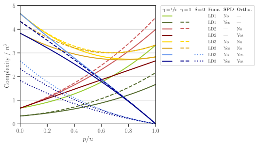

Benchmark Test#
This page demonstrates the performance of detkit on matrices from real applications. We refer the reader to [1] for details of the numerical test. Here, we provide supplemental details on how to reproduce the numerical results of that reference.
Test Description#
This numerical test aims to compute the function
where \(\mathbf{A} \in \mathbb{R}^{n \times n}\) and \(\mathbf{X} \in \mathbb{R}^{n \times p}\) are given matrices and
\(\mathbf{N} = \mathbf{A} + \mathbf{P} - \mathbf{A}\mathbf{P}\)
\(\mathbf{P} = \mathbf{I} - \mathbf{X}(\mathbf{X}^{\intercal} \mathbf{X})^{-1} \mathbf{X}\)
\(\mathbf{M} = \mathbf{A}^{-1} - \mathbf{A}^{-1} \mathbf{X}(\mathbf{X}^{\intercal} \mathbf{A}^{-1} \mathbf{X})^{-1} \mathbf{X}^{\intercal} \mathbf{A}^{-1}\).
\(\mathbf{U}_{\mathcal{X}^{\perp}}\) is the orthonormal basis that is orthogonal to the image of \(\mathbf{X}\).
The reader is referred to Section 3 of [1] for the motivation for the definition of the function \(\mathrm{logdet}(\mathbf{A}, \mathbf{X})\). In detkit, the three relations in the above are implemented by detkit.loggdet() function. This function accepts the parameter method with the possible values method=legacy, method=proj, and method=comp corresponding to the relations LD1, LD2, and LD3, respectively.
In the numerical test, we compare the numerical performance of the above three relations by measuring their processing time and the empirical computational FLOPs. We consider four cases where
\(\mathbf{X}\) is orthogonal and not orthogonal.
\(\mathbf{A}\) is symmetric and positive-definite (SPD) and not SPD.
The complexity of computing \(\mathrm{logdet}(\mathbf{A}, \mathbf{X})\) using either of LD1, LD2, or LD3 relations for the above cases is shown in the figure below (see also Figure 1 of [1]).
{kind=link}
Dataset#
In our experiment, the matrix \(\mathbf{X}\) is generated by trigonometric basis functions in the domain \(t \in [0, 1]\) as
where \(t_i = \frac{i}{n}\) and \(n\) is the number of the rows of the matrix. We fix the size \(n = 2^9\) and vary \(p = p_1, \dots, p_l\) where \(p_j = \frac{jn}{l}\) and \(l = 30\). This matrix can be generated by detkit.design_matrix(). We also orthogonalize the columns of \(\mathbf{X}\). A code to produce such matrix is given below:
>>> # First, install detkit by: pip install detkit
>>> from detkit.datasets import design_matrix
>>> X = design_matrix(2**9, 2**9, ortho=True)
Also, we generate an SPD matrix \(\mathbf{A}\) using detkit.covariance_matrix() function, which produces a covariance matrix based on the autocovariance of an electrocardiogram (ECG) signal as described below. The ECG signal that we use is obtained from [2] and [3] and a segment of the signal is shown in the first row of the figure below.
To obtain a stationary signal, we removed the baseline wander variation of the ECG signal (shown by the orange curve) by passing a moving average filter with \(0.5\) seconds window length. Also, we reduce the signal noise using a low-pass filter with a cut frequency of \(45\) Hz. A segment of the smoothed signal is shown in the second row of the figure.

The above figure can be produced by detkit.electrocardiogram() function as shown below:
>>> from detkit.datasets import electrocardiogram
>>> ecg, time = electrocardiogram(start=0.0, end=10.0, bw_window=0.5, freq_cut=45,
plot=True, plot_bw=True)
To generate the covariance matrix \(\mathbf{A}\), the first 30 seconds of the above ECG signal is used as follows. It is assumed that the smoothed ECG signal is a wide-sense stationary stochastic process, so its autocovariance function can be obtained by
where \(\Delta t\) is the lag-time of the autocovariance function, \(\mathbb{E}\) is the expectation operator, and \(f\) is the ECG signal with the mean \(\bar{f}\). The covariance matrix \(\boldsymbol{A}\) is defined by the components
where \(f_s = 360\) Hz is the sampling frequency of the ECG signal and \(\nu\) is the sampling of the autocorrelation function that is set to \(\nu = 2\). Note that \(\mathbf{A}\) is a Toeplitz matrix.
The autocorrelation function \(\tau\) and covariance matrix \(\mathbf{K}\) can also be defined from the autocovariance function and covariance matrix by \(\tau = \sigma^{-2} \kappa\) and \(\mathbf{K} = \sigma^{-2} \mathbf{A}\) where \(\sigma^2 = \kappa(0)\) is the variance of the stationary signal. Figures (a) and (b) below respectively show the autocorrelation function and correlation matrix, respectively. Figure (c) shows the eigenvalues of the correlation matrix which indicates that the correlation (and hence the covariance) matrix is positive-definite as all the eigenvalues are positive.

The above figure can be produced by the code below:
>>> from detkit.datasets import covariance_matrix
>>> K = covariance_matrix(size=2**9, sample=2, cor=True, ecg_start=0.0,
ecg_end=30.0, ecg_wrap=True, plot=True)
Note
Our numerical results below are independent of the matrices used during the benchmark tests. The user can reproduce the benchmark results with randomly generated matrices.
Configure Settings#
The following numerical experiment consists of testing the code with two different implementations for Gramian matrix multiplications within the source code of this package. To do so, detkit needs to be compiled for both configurations as described below.
First, obtain the source code of detkit by
git clone http://www.github.com/ameli/detkit
To configure the Gramian matrix multiplication, modify /detkit/detkit/_definitions/definitions.h file as follows:
Set
USE_SYMMETRYto1to enable symmetric Gramian matrix multiplication. This setting corresponds to the parameter \(\gamma = \frac{1}{2}\) in Section 4 of [1].Set
USE_SYMMETRYto0to disable symmetric Gramian matrix multiplication. This setting corresponds to the parameter \(\gamma = 1\) in Section 4 of [1].
For each of the above cases, compile the package as described in Compile from Source and run the experiment as described next.
Note
Note that, except for test purposes, compiling detkit from source code is not required. An installation of detkit through pip or conda is pre-configured with symmetric Gramian matrix multiplication enabled.
Perform Test#
Note
To run the following tests, make sure the Linux perf tool is installed as described in Dependencies. Note that the numerical experiment can only be tested on Linux operating systems due to the dependency of the test on the perf tool.
The script to run the benchmark test is provided by /detkit/benchmark/scripts/benchmark.py file located at /detkit/benchmark directory of the source code. To see the script usage and a list of user arguments that can be passed to the script in the command line, call the script with -h or --help option as follows:
cd detkit/benchmark/scripts
python ./benchmark.py -h
The above command prints the usage of the script as shown below:
Usage: benchmark.py <arguments>
The following arguments are required:
-n --size=[int] Size of the matrix in log2. The size of matrix is 2
to the power of this number.
-f --func=[str] Type of function, which can be either "loggdet", or
"logpdet".
The following arguments are optional:
-b --blas Computes logdet using existing libraries in numpy
and scipy, otherwise, it uses the cython code.
-r --repeat=[int] Number of times the numerical experiment is
repeated. Default is 10.
-l --num-ratios=[int] Number of ratios (p/n) from 0 to 1 to be tested.
Default is 50.
-v --verbose Prints verbose output. Default is False.
-h --help Prints the help message.
Examples:
1. Compute loggdet, set the matrix size to n=2**8=256, the array of 50
ratios p/n from 0 to 1, i.e. linspace(0, 1, 50), and repeat each
experiment 3 times:
$ benchmark.py -n 8 -f loggdet -r 3 -l 50 -v
2. Compute logpdet, set the matrix size to n=2**9=512, the array of 100
ratios p/n from 0 to 1, i.e. linspace(0, 1, 100), and repeat each
experiment 5 times:
$ benchmark.py -n 9 -f logpdet -r 5 -l 100 -v
We run the script with \(n = 2^9\) to test the function detkit.loggdet() using the option -f loggdet, and we repeat the experiment ten times using \(r=10\). We generate \(l = 30\) points for the ratio \(p/n = 0, \cdots, 1\).
cd /detkit/benchmark/scripts
python ./benchmark.py -n 9 -f loggdet -r 10 -l 30 -v
Run on Cluster#
To run the /detkit/benchmark/scripts/benchmark.py script on a cluster, use the job files provided in /detkit/benchmark/jobfiles directory.
Note
Run the benchmark script on only one processor thread to produce accurate results for measuring processing time.
To run the experiment on a cluster with Torque workload manager, submit
/detkit/benchmark/jobfiles/jobfile_benchmark.pbsjob file bycd /detkit/benchmark/jobfiles qsub jobfile_benchmark.pbs
To run the experiment on a cluster with SLURM workload manager, submit
/detkit/benchmark/jobfiles/jobfile_benchmark.shjob file bycd /detkit/benchmark/jobfiles sbatch jobfile_benchmark.sh
In either of the two job files in the above, the argument of the benchmark script can be configured for instance by setting N=9 (corresponding to \(n = 2^9\)), NUM_RATIOS=30 (corresponding to \(l=30\)), REPEAT=10 (corresponding to \(r=10\)). Also, set FUNC="loggdet", which computes \(\mathrm{logdet}(\mathbf{A}, \mathbf{X})\).
Output Files#
The output of the above two experiments is stored in /detkit/benchmark/pickle_results directory. Corresponding to each experiment, the output file has the following name:
Output filename
matrix size
Gramian Matrix Multiplication
benchmark_loggdet_9_gram.pickle\(n=2^9\)
with utilizing symmetry
benchmark_loggdet_9_no-gram.pickle\(n=2^9\)
without utilizing symmetry
Plot Results#
To reproduce the plots, run the notebook file /detkit/benchmark/notebooks/benchmark_plot.ipynb. The notebook stores the plots as svg and pdf files in /detkit/benchmark/plots/ directory. These plots correspond to Figure 2 of [1], which is also shown below. Note that in the figures, the processing time and FLOPs are normalized by \(n^3\) (recall that here \(n = 2^9\)). Such normalization is advantageous if \(n\) is varied as the plot scale remains unchanged.